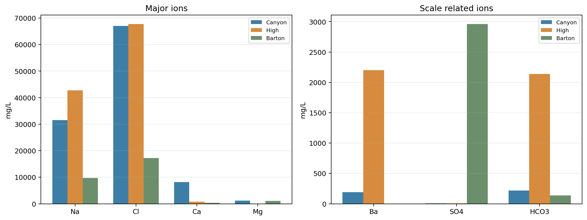
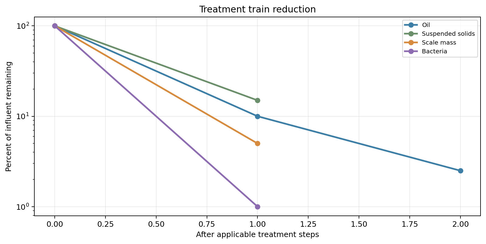

Source waters
6
Canyon charge error
0.10 percent
BaSO4 precipitate
1869
mg/L in 50:50 mix
BaSO4 saturation
1.1e+06
Treatment balance error
0.0e+00



Source brines
| Brine | TDS, mg/L | Charge error, percent |
|---|---|---|
| Canyon Sands Formation water | 108852 | 0.10 |
| Barton seawater | 31852 | -1.89 |
| Angsi seawater | 34620 | 2.35 |
| High barium formation water | 117989 | 2.57 |
| IOP 6334 sewage | 4080 | -185.15 |
| IOP 5423 source well | 5016 | -44.13 |
Compatibility screen for 50 percent high barium water and Barton seawater
| Mineral | Saturation ratio | Activity correction used |
|---|---|---|
| BaSO4 | 1.12e+06 | no |
| SrSO4 | 103 | no |
| CaSO4 | 9.34 | no |
BaSO4 precipitate: 1869 mg/L.
Treatment train
| Step | Target | Inlet | Outlet |
|---|---|---|---|
| De-oiling hydrocyclone | oil_mg_l | 120.00 | 12.00 |
| Dissolved gas flotation | oil_mg_l | 12.00 | 3.00 |
| Media filtration | suspended_solids_mg_l | 80.00 | 12.00 |
| Scale inhibitor | scale_precipitation_mg_l | 1860.00 | 93.00 |
| Biocide | bacteria_count_per_ml | 10000.00 | 100.00 |
Treatment removal fractions are screening assumptions. Davies correction is off when ionic strength exceeds 0.5 M. Two IOP water rows omit sodium and are not charge balanced.